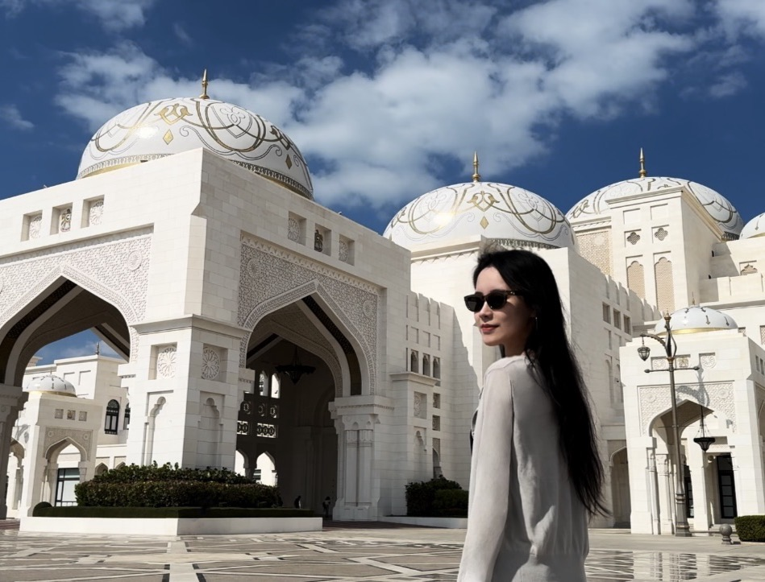
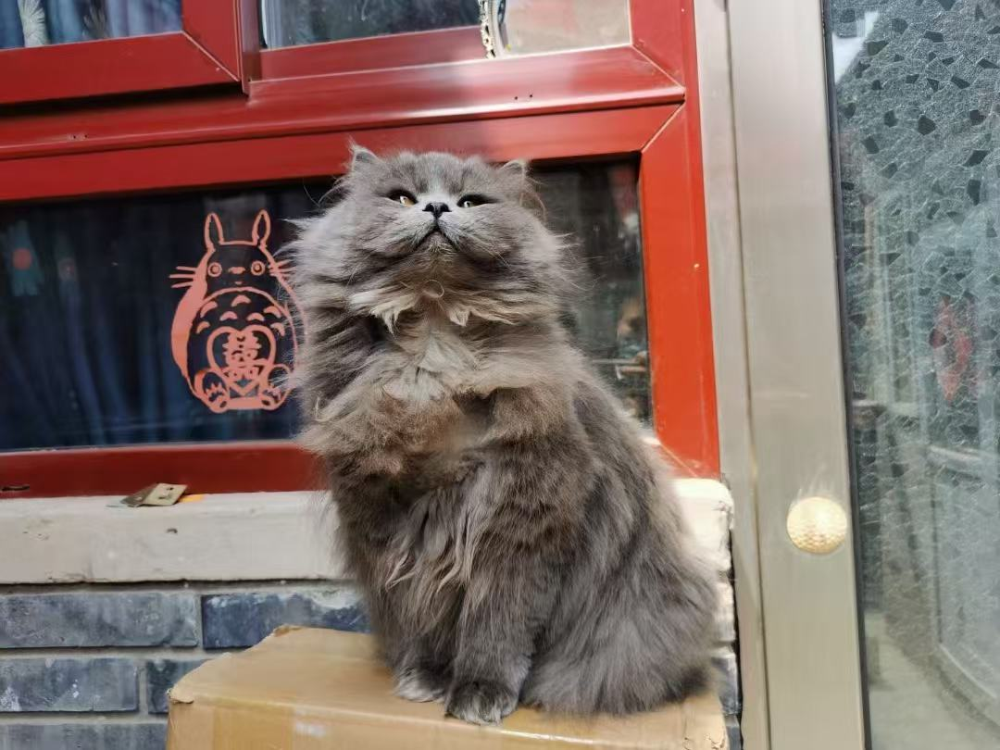
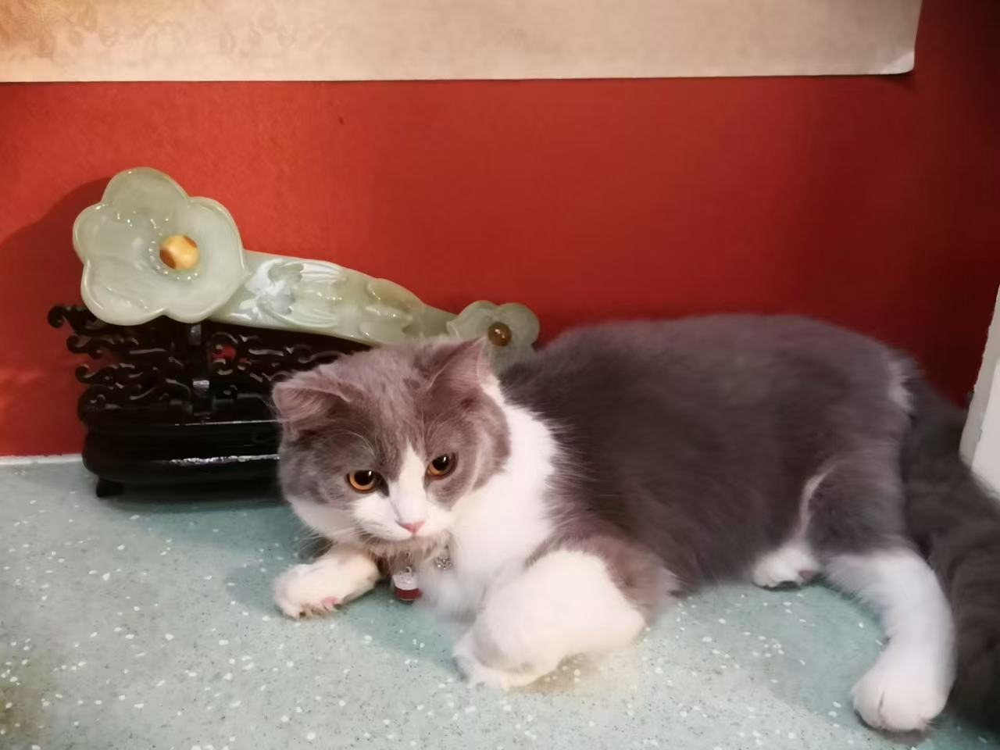

Claire (Zilu) GuoThe Chinese University of Hong Kong (Shenzhen)
|

|
I am a final-year Mphil candidate at The Chinese University of Hong Kong (Shenzhen) advised by Prof. Zhen Li. Before that, I received my bachelor's degree in Law and Business Administration from Nankai University. I plan to enter the job market in 2026 and am open to overseas opportunities in AI/Technology Strategy roles. Feel free to contact me early to discuss potential collaborations.
| PiSA: A Self-Augmented Data Engine and Training Strategy for 3D Understanding with Large Models
Zilu Guo, Hongbin Lin, Zhihao Yuan, Chaoda Zheng, Pengshuo Qiu, Dongzhi Jiang, Renrui Zhang, Chun-Mei Feng, Zhen Li br>IEEE/CVF Winter Conference on Applications of Computer Vision (WACV), 2026 [PDF] [Code] |
| DriveGEN: Generalized and Robust 3D Detection in Driving via Controllable Text-to-Image Diffusion Generation
Hongbin Lin, Zilu Guo, Yifan Zhang, Shuaicheng Niu, Yafeng Li, Ruimao Zhang, Shuguang Cui, Zhen Li IEEE Conference on Computer Vision and Pattern Recognition (CVPR), 2025 [PDF] [Code] |
| MME-CoT: Benchmarking CoT in MLLMs for Reasoning Quality, Robustness, and Efficiency
Dongzhi Jiang*, Renrui Zhang*, Ziyu Guo, Jianhan Jin, Liuhui Wang, Yu Qi, Xinyan Chen, Claire Guo, Yanwei Li, Bo Zhang, Chaoyou Fu, Shen Yan, Hongsheng Li International Conference on Machine Learning (ICML), 2025 [PDF] [Code] |
| Achieving flexible fairness metrics in federated medical imaging
Mr Huijun Xing, Mr Rui Sun, Professor Jinke Ren, Dr jun Wei, Dr Chun-Mei Feng, Ms xuan Ding, Ms Zilu Guo, Ms Yu Wang, yudong Hu, Dr WeiWei, Dr Xiaohua Ban, Chuanlong Xie, Mr Yu Tan, Dr Xian Liu, Professor Shuguang Cui, Professor Xiaohui Duan, Professor Zhen Li Nature Communications, 2025 [PDF] [Code] |
| VT-CLIP: Enhancing Vision-Language Models with Visual-guided Texts
Longtian Qiu*, Renrui Zhang*, Ziyu Guo, Ziyao Zeng, Zilu Guo, Yafeng Li, Guangnan Zhang Arxiv, 2021 [PDF] [Code] |
|

|

|
|
|